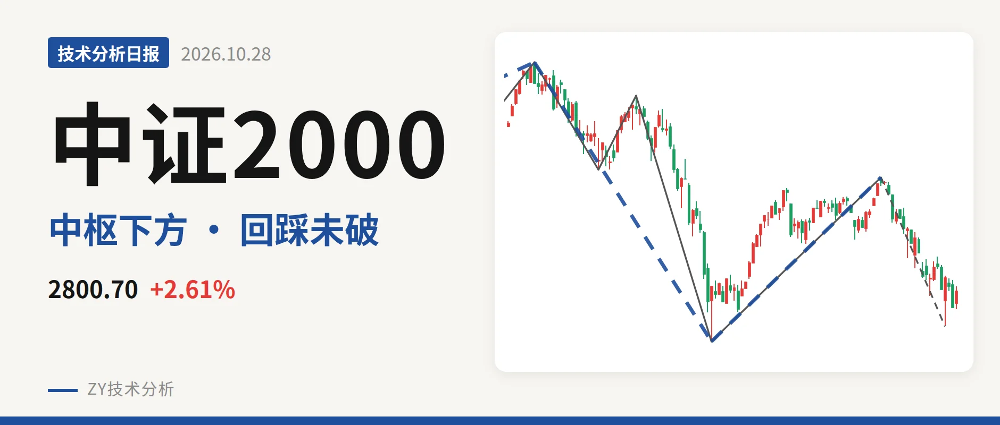
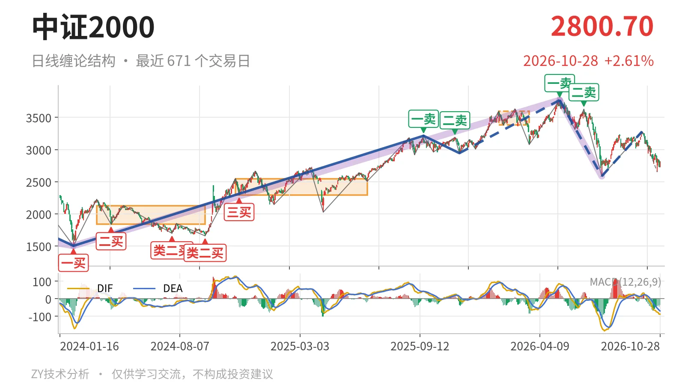
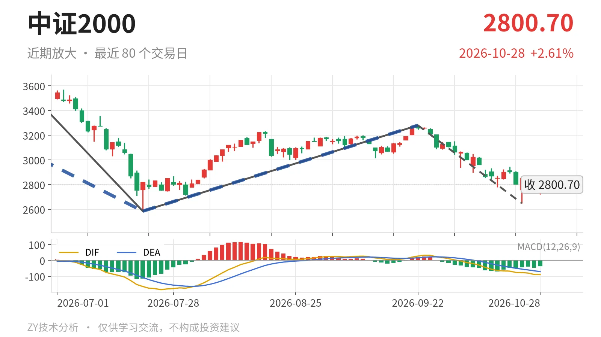

中证2000｜跌破3381点后回踩2585点未破

最近日线中枢 3381.36—3593.19点，收盘位于中枢之下
一句话：日线下跌段延续，回踩2585点未破，力度未放大
📉 走势结构：5月14日以来下跌段仍在延续
中证2000日线级别仍处在2026年5月14日3768.08点开始的下跌段中，7月21日以来的反弹没有改变这一结构。日线线段上，2026年5月14日至7月21日的下跌线段已含3笔，没有出现反向线段；7月21日至9月22日的反弹只有一笔，不构成日线线段。更大级别里，2026年5月14日至7月21日的下跌走势同样还在延续。因此当前是下跌段中的回落，而不是上涨中继。最新DIF -88.4仍低于零轴，10月26日至28日的三日反抽最高2853.30点，也低于9月22日反弹高点3280.29点。

🧭 中枢与位置：跌破最近日线笔中枢，反抽承压
最新收盘2800.70点位于最近日线笔中枢2026年1月26日至3月23日中枢（3381.36—3593.19点）下方，距下沿580.66点、约17.2%。该中枢中轴3487.28点，明显高于前两个日线笔中枢，说明中枢本身此前是上移的；当前价格跌破后，反抽要面对3381点一线的压力。下方线段中枢2022年4月27日至2023年6月19日的上沿2437.36点，最新价仍高于其上沿363.34点，仍属线段中枢上方的波动。
📉 买卖点：日线卖点依次降低，线段类二买承受回踩
日线笔级别卖点2026年5月14日一卖3768.08点、2026年6月23日二卖3626.48点，一个比一个低，其所在笔均已结束，价格其后未再创出高于3768.08点的新高，这两个卖点仍是日线笔级别的压力结构。线段级别上，7月21日类二买2585.35点是最近的结构承接，但该买点之后没有形成新的线段买点。2025年11月21日线段级别二三买2944.56点已被2026年5月14日以来下跌跌破，只对应其后的上涨段，对当前更大级别不再构成支撑。

⚖️ 背驰：回踩未创新低，MACD 力度弱于前一笔
当前最值得比较的是6月23日至7月21日的下跌笔与9月22日以来仍在延续的下跌笔。前一笔绿柱面积810、DIF低点-164.2；后一笔截至10月28日绿柱面积618、DIF低点-76.5。后一笔最低2649.26点，未跌破前低2585.35点，绿柱面积更小、DIF低点更高，这不是“新低不新弱”，而是回踩未创新低、力度同步减弱。后一笔还没结束，比较会随价格延续而变化；若后续跌破2585点且绿柱面积明显放大，衰减判断便不成立。
🔎 关键位置观察：2585点与3381点决定结构强弱
接下来看三个位置。若当前回落不再跌破2585点，2026年5月14日以来的下跌段可能转入围绕2585点附近的震荡，7月21日线段类二买暂时保留。若跌破2585点，则7月21日线段级别类二买被破坏，下跌段继续向下延伸。反抽若不能回到3381点上方，日线级别将构成针对2026年1月26日至3月23日中枢的三卖结构，反弹难以扭转下跌段。只有后续日线笔重新站上3280点，7月21日以来的反弹才可能由一笔升级为线段。综合看，当前弱在价格位于最近中枢下方、日线卖点压制仍在；但2585点未破且下跌力度衰减，结构上有修复窗口，方向不偏强。
⚠️ 本文为基于公开行情数据的缠论技术结构记录，由程序自动计算并生成，仅供学习交流，不构成任何投资建议。市场有风险，投资需谨慎。